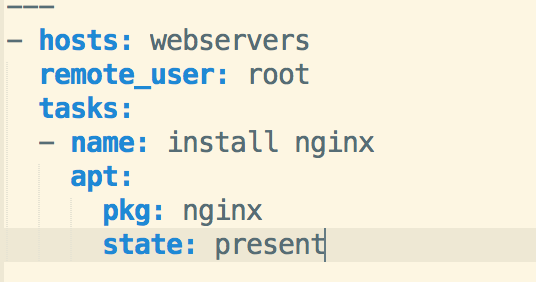
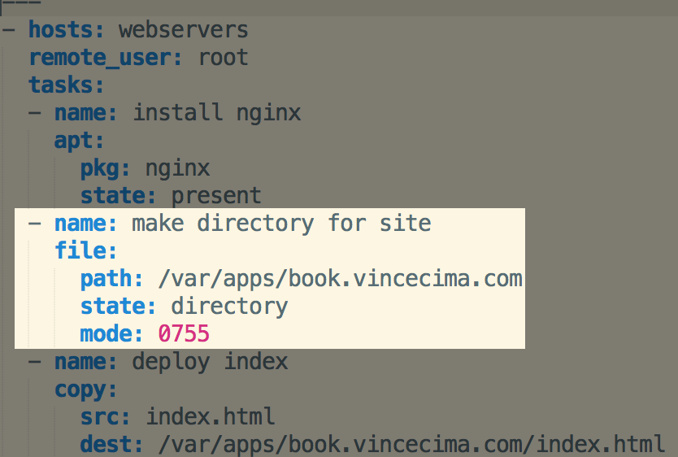
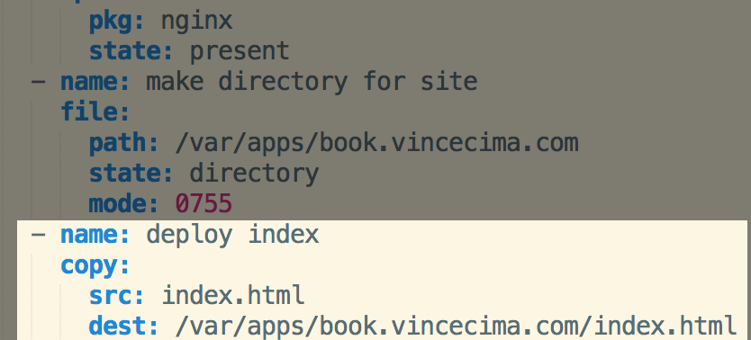

Beginner Ansible
What is Ansible?
- Ansible is an open-source software platform for configuring and managing computers.
- Ansible is written in Python. Plugins can be written in any language as long as it can communicate via standard input & output.
- Ansible is agentless. No master servers or daemons required.
What's Our Problem?
I need to promote my new book.

I want http://book.vincecima.com to be the website for my book.
What's Already Done
- Created a new VPS on DigitalOcean's platform.
- Pointed http://book.vincecima.com to new VPS.
- Installed Ansible.
What's Left to Do
- Install a webserver (NGINX)
- Deploy a single HTML file
- Configure NGINX to serve that file when book.vincecima.com is requested
Inventory: Telling Ansible Where to Go
[webservers]
book.vincecima.com
- Simple, INI based format
- Combine domain names into groups
Starting Simple: Ad-Hoc Mode & Modules
ansible webservers -m apt -a "name=nginx state=present" \
-i production.inventory -u root
- Specify group or groups to work against.
-
Modules control resources or execute commands
- apt is for working with Ubuntu's package manager, apt-get
- File/directory manipulation, Git repo control and downloading a file are other examples
- Modules are idempotent.
Starting Simple: Ad-Hoc Mode & Modules
ansible webservers -m apt -a "name=nginx state=present" \
-i production.inventory -u root
-
Module arguments are additional info for a module
- name is the name of the package whose state we want to modify
- state=present tells Ansible that we want the package to be installed if not already
- -i let's us specify an inventory file
- -u is what user to connect as on the remote system(s)
Playbooks: Easier to Read and Use
“If Ansible modules are the tools in your workshop, playbooks are your design plans.”
ansible-playbook -i production.inventory book.yml
Copying Files From The Local To The Remote: Deploying My Site
Copying Files From The Local To The Remote: Deploying My Site
Controlling Services: Configuring and Restarting NGINX
- Deploy NGINX configuration
- Link NGINX configuration to sites-enabled directory
- Restart NGINX
- Visit book.vincecima.com and PROFIT